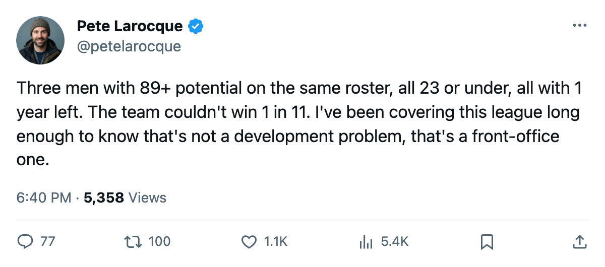

Florida Has 3 Under-23s With 89+ Potential on 1-Year Deals. The Team Just Lost 11.
The Panthers finished 76 points, dead last in the Southeast, with three of the league's best young players all entering the final year of their entry-level contracts.
 Pete LarocqueScouting editor · The Prospect File
Pete LarocqueScouting editor · The Prospect File
 Jay Bouwmeester83 logged 33.3 minutes a night at 21 years old. He carries a 96 potential grade in the Bureau's Book, a $1.20M cap hit, and 1 year left on his contract. His team just lost 11 straight.
Jay Bouwmeester83 logged 33.3 minutes a night at 21 years old. He carries a 96 potential grade in the Bureau's Book, a $1.20M cap hit, and 1 year left on his contract. His team just lost 11 straight.
 Florida Panthers finished 25-36-16, 76 points, last in the Southeast Division with an L11 streak that closed out the season. The Panthers have three players under 23 with potential grades of 89 or higher in the Book. All three have 1 year remaining on their deals.
Florida Panthers finished 25-36-16, 76 points, last in the Southeast Division with an L11 streak that closed out the season. The Panthers have three players under 23 with potential grades of 89 or higher in the Book. All three have 1 year remaining on their deals.
 Vaclav Nedorost84 is 23, a center, 78 overall with 93 potential. He sits at +6 on the Development Index, tied with
Vaclav Nedorost84 is 23, a center, 78 overall with 93 potential. He sits at +6 on the Development Index, tied with  Marian Gaborik99 and Mike Komisarek81 for the league's highest form rating. He plays 13.4 minutes a night and carries a $1.00M cap hit into the final year of his contract.
Marian Gaborik99 and Mike Komisarek81 for the league's highest form rating. He plays 13.4 minutes a night and carries a $1.00M cap hit into the final year of his contract.  Kristian Kudroc76, 23, is a defenseman at 74 overall with 89 potential, 34 points in 70 games, 24.7 minutes a night, also $1.00M with 1 year left.
Kristian Kudroc76, 23, is a defenseman at 74 overall with 89 potential, 34 points in 70 games, 24.7 minutes a night, also $1.00M with 1 year left.
All three under 23, all graded 89 or above, all on deals that expire the same June.
Joe Nieuwendyk had 113 points in 79 games.  Viktor Kozlov81 had 111 in 82.
Viktor Kozlov81 had 111 in 82.  Olli Jokinen85 had 90 in 72. The three young players the Bureau ranks as futures did not drive the offense.
Olli Jokinen85 had 90 in 72. The three young players the Bureau ranks as futures did not drive the offense.
Bouwmeester returned from a knee injury on April 6 and played 79 games at 33.3 mpg. His per-attribute grades read 90 speed, 85 balance, 85 passing, 85 shot power, 83 agility, 83 checking. He is the youngest of the three by 2 years and carries the highest potential grade. The Panthers drafted him third overall in 2002 out of Medicine Hat.
What Florida has to decide before next April
The Panthers hold 6 picks in June, including 1 first. The 2004 class gave them Mathieu Landry73, a goaltender at pick 22 with 63 potential who played 1 game. No other 2004 first-rounder wears Florida.
From the 2000-2003 drafts, Florida also has  Stephen Weiss76 (2001 #4, 71 overall, 4 points in 38 games) and Lukas Krajicek74 (2001 #24, 72 overall, 15 points in 50 games). Neither carries a potential grade above 90. The gap between the top of Florida's youth and the next tier is wide.
Stephen Weiss76 (2001 #4, 71 overall, 4 points in 38 games) and Lukas Krajicek74 (2001 #24, 72 overall, 15 points in 50 games). Neither carries a potential grade above 90. The gap between the top of Florida's youth and the next tier is wide.
The L11 streak covered every opponent from Boston to Philadelphia. Eight regulation losses, three in overtime. Goals against: 36, goals for: 28. Most of those games were close. Florida just never found a way to win one.
The three young players can play. Nedorost's +6 on the Index is the same rating Marian Gaborik earned on a 133-point team. Bouwmeester's 33.3 mpg is the kind of trust a coach gives a top-pairing defender. Kudroc's 70 games and 34 points at 23 are legitimate production.
The problem is the calendar. Three players on 1-year deals in a market that finished 76 points. The Panthers can re-sign all three, which locks real money to a roster that lost 11 in a row. They can trade one, which admits the team is rebuilding while the other two watch. They can run the remaining year, let all three test the market next spring, and hope the 6 picks produce a replacement.
By the Book, Florida has three of the best young players in the league. The record says those three players couldn't win 1 game in 11 nights.
